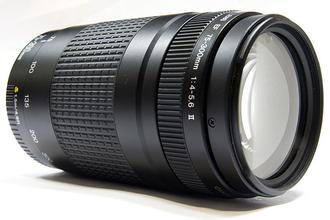

 覆盖从75mm中远摄到300mm超远摄端的小型轻量远摄变焦镜头。镜头重量较轻约480克，加之镜身无起伏的设计，具有出众的携带性。宽大的变焦环十分便于操控，而且其前部配置了金属环，使整个镜身显得相当紧凑。9组13片镜片构成的光学系统，使用的均为环保型无铅玻璃镜片。最近对焦距离约为1.5米，使用300mm远摄端，可在约0.25倍的最大放大倍率下进行拍摄。是一款性价比较高的远摄变焦镜头，能够轻松体验远摄镜头的表现力。75mm附近可拍出背景虚化的人像，远摄区域适于展现拉近效果的风光、野生鸟类以及动物等。58毫米的滤镜直径，可与小型标准变焦镜头的配件通用。搭配APS-C画幅EOS数码相机，可获得相当于约120-480mm的视角，进一步提升了远摄区域的威力。镜身全长约122毫米，可装入摄影服的衣袋里，十分便于携带。
| 镜头焦距 | 75-300mm |
|---|---|
| APS-C画幅下的35mm规格换算焦距 *1 | 约120-480mm |
| 镜头结构 | 9组13片 |
| 光圈叶片 | 7片 |
| 最小光圈 *2 | 32-45 |
| 最近对焦距离 | 约1.5米 |
| 最大放大倍率 *3 | 约0.25倍 |
| 驱动系统 | DC马达 |
| 手抖动补偿效果 | - |
| 滤镜直径 | 58毫米 |
| 最大直径及长度 | 约Φ71×122毫米 |
| 重量 | 约480克 |